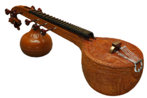

The Veena is a plucked stringed instrument originating in ancient India, used
mainly in Carnatic classical music and Hindustani classical music.
The name is
used for several instruments belonging to different families, mainly the Rudra
Veena (a zither) and the Saraswati veena (a necked bowl lute) but also to other
types of plucked string instruments (Mohan veena, ancient veena etc.).
The earliest Veena was an instrument of the harp type whose type survives in the
Burmese harp, whereas in the last centuries and nowadays, the word has tended to
be applied to instruments of the lute type or even, recently, to certain kinds
of guitars developed in India.
The more popular sitar is believed to have been
derived from a type of Veena which was modified by a Mughal court musician to
conform with the tastes of his Persian patrons. A person who plays a Veena is
called a vainika.

Etymology and history:
The Sanskrit word veena (sometimes transliterated as vina) as a generic term for
all kinds of string instruments, just as the Tamil word yaaḻ (often written
yaazh or yaal).
Veena is attested already in the Rigveda has designated in the
course of Indian history a variety of instruments of various types and also
finds in the list of Musical instruments used by Tamil people out in Tirumurai
dated 6th to 11th century.
In the last centuries and today the instruments
designated under the designation veena of which there are several kinds, have
tended to be mostly instruments of the lute or cithar type, and recently the
word was even applied to modified Western guitars. But the early veenas could be
plucked string instruments of any type.
The early Gupta veena:
depiction and playing technique:
One of the early veenas used in India from early times, until the Gupta period
and later this is probably the instrument referred to as veena in a chapter of
the Nāṭyaśāstra dealing with instrumental music was an instrument of the
harp type and more precisely of the arched harp.
It was played with the strings
being kept parallel to the body of the player, with both hands plucking the
strings, as shown on Samudragupta's gold coins. It is not possible to tell
exactly the number of strings of the instrument on the coin, but descriptions in
early literary sources of an ancient instrument called thesaptatantree veena
(7-string veena) seem to coincide generally with the type of instrument
represented on the coin
Classification:
Veena can be broadly classified into several different types
With frets:
Rudra veena, plucked string instrument used in Hindustani music
Saraswati veena, plucked string instrument used in Carnatic music
Fretless:
Vichitra veena, plucked string instrument used in Hindustani music
Chitra veena or gottuvadhyam, plucked string instrument used in Carnatic music
Other:
Yazh, or Shatatantri veena
Saptatantri veena